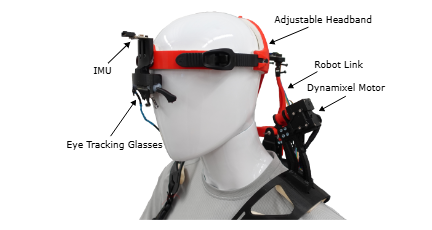
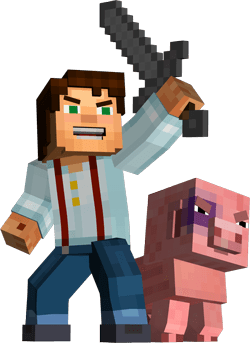
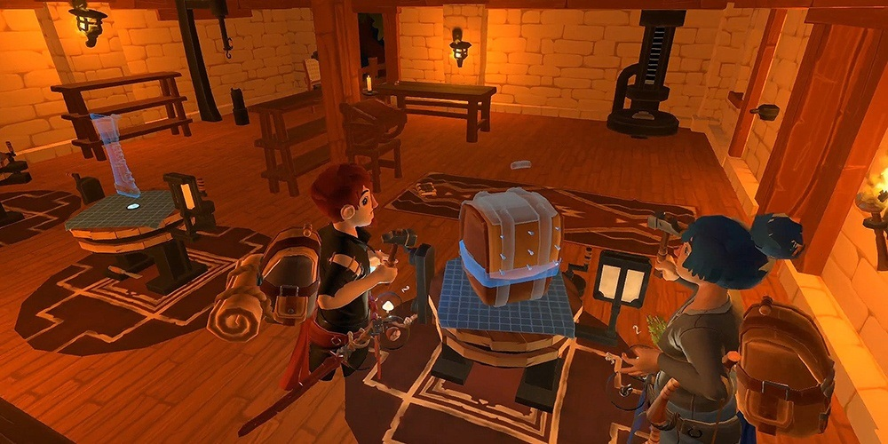
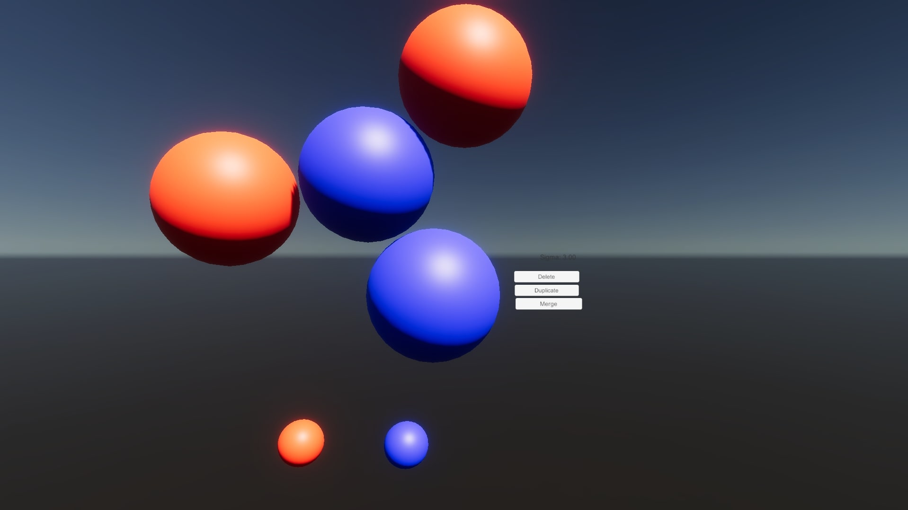

Human in the loop training
Designing agent pipelines that remain steerable and interpretable during learning.
Agentic Game AI • Gameplay Programming • VR / Simulation
I build intelligent gameplay systems using reinforcement learning, adaptive control, and AI driven behavior in Unity and Unreal.
Gameplay programmer focused on turning ML research into playable game systems. I build learning agents in Project Malmo and Unreal Learning Agents, and I design VR and simulation experiences that stay responsive on real hardware.
Seeking Gameplay Programmer, Game AI Programmer, AI Gameplay Programmer, and VR/Simulation Programmer roles at game studios and interactive entertainment teams.
Systems built
Core runtime lanes
Publications
Major roles
Currently Exploring
Designing agent pipelines that remain steerable and interpretable during learning.
Building interaction loops that adjust to player behavior, preference, and response timing.
Creating game systems where intelligence is designed into play rather than layered on top.
About
My work sits at the intersection of gameplay feel, autonomous behavior, and immersive simulation.
I’m currently pursuing a Master of Entertainment Arts and Engineering in Game Engineering at the University of Utah. I’m especially interested in systems where intelligence is designed into the player experience from the start.
I work across RL agents in Minecraft, adaptive control systems in VR, NPC behavior in Unreal, and real time prototypes tied to hardware.
Education
Master of Entertainment Arts and Engineering — Game Engineering
August 2025 to Present
GPA: 4.0 / 4.0
B.Tech in Computer Science and Engineering — AIML
2021 to 2025
Featured Work
These projects best represent how I build adaptive systems, intelligent agents, and playable environments.
Designed and prototyped a wearable VR neck exoskeleton with UCB1 bandit personalization to learn controller and assistance preferences for comfort.

Built a DQN based assistive bot for navigation and resource collection using replay buffer and epsilon greedy exploration.

Trained and deployed ML agents for adaptive NPC behavior in battle simulation environments at Zen Technologies.
Experience
Designed and prototyped a wearable VR neck exoskeleton with UCB1 bandit personalization and built a DQN based assistive bot in Project Malmo for navigation and resource collection.
Trained and deployed ML agents with Unreal 5.3/5.4 Learning Agents, integrated perception, pathfinding, and behavior trees, and improved target scene runtime to 45 FPS.
Trained aspiring game developers in Unity and C#, and authored a guidebook on building immersive games with Unity from scratch.
Developed a Unity VR/AR molecular simulation for nanoparticle orientation prediction with mixed reality visualization and real time manipulation for research and education.
Projects
Baseline DQN with replay buffer, target network, epsilon greedy exploration, and data pipelines for imitation learning in Project Malmo.
Launch ↗Wearable neck assist prototype with posture cues, support logic, and adaptive controller selection.
Launch ↗Interactive VR history shop experience with artifacts, interaction loops, and smooth standalone performance.
Launch ↗
Unreal Engine FPS jam project with weapon mechanics, damage systems, and animation setup.
Launch ↗Unity cricket simulator using computer vision gesture batting, Blender stadium assets, and physics based ball behavior.
Launch ↗Interactive Unity molecular visualization and orientation prediction system for mixed reality research workflows.
Launch ↗
Skills
Skill is excellence in action.
Research
Publications and output currently reflected in the uploaded research resume.
RamKumar, M. & Rithvik, M. (2024). Reinforcement learning for Flappy Bird.
Poornima, S. & Rithvik, M. (2023).
Rajini, P. & Rithvik, M. (2024). International Conference on Innovative Emerging Technologies, ICIET 2025.
Leadership and external coordination alongside technical and research driven work.
Contact
Open to internships and early career roles in gameplay, game AI, VR, and simulation.